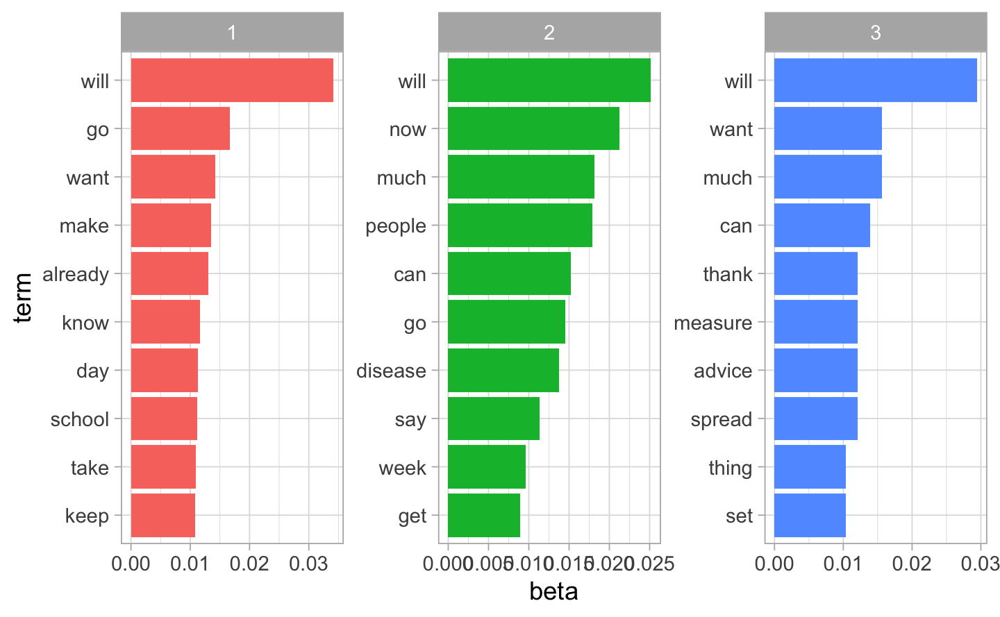
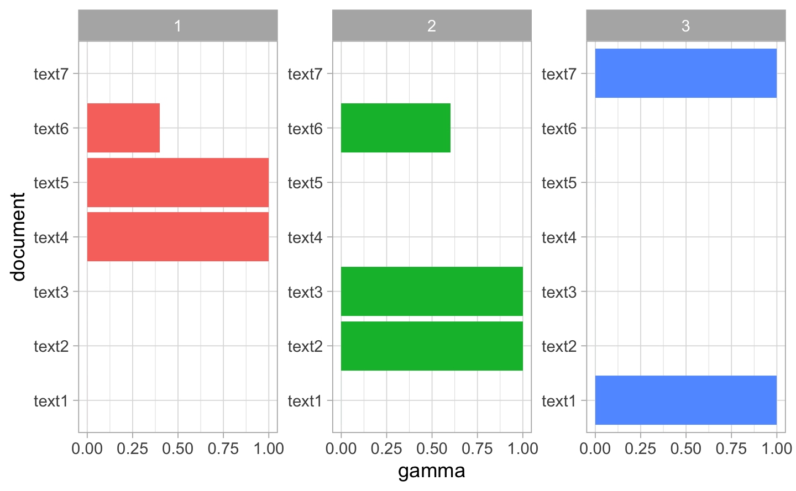
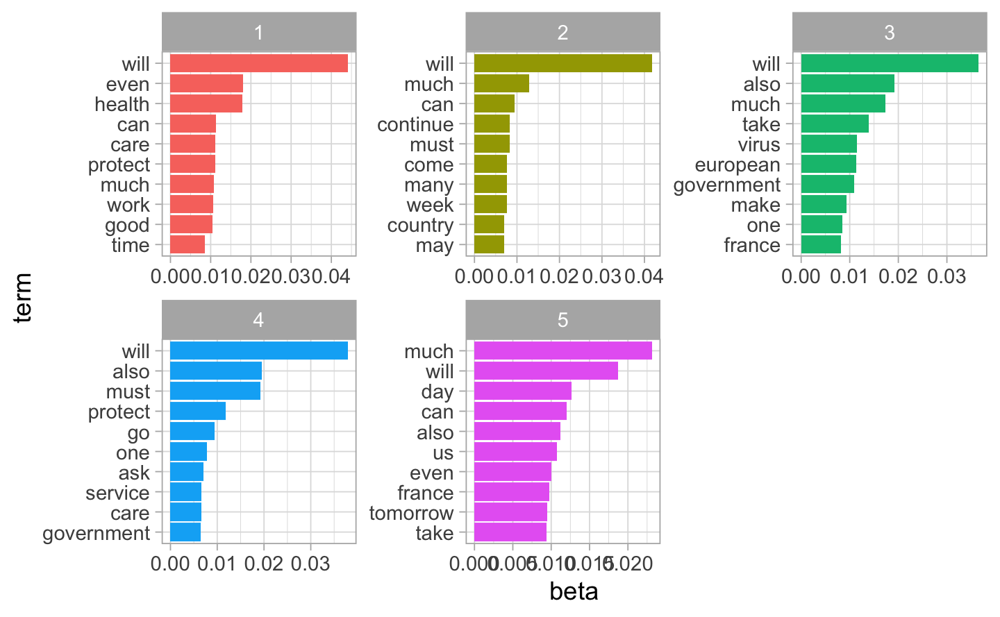
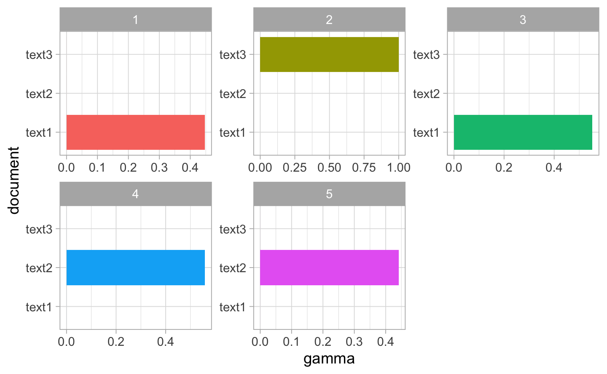
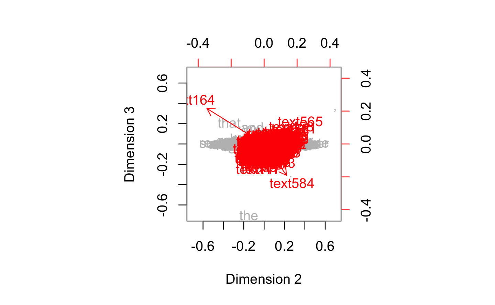
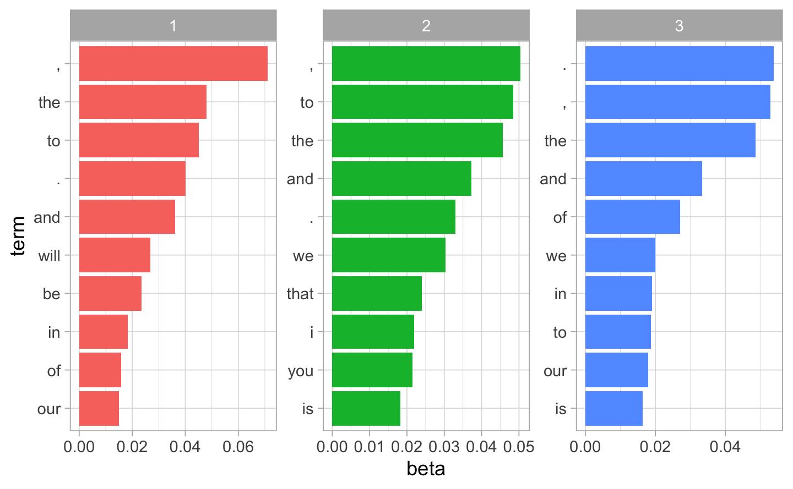

Chapter 6 Topic Modelling
In this chapter, we analzye the topics of the speechs of Boris Jonhson and Macron using - LSA(Latent Semantic analysis). The core idea is to take a matrix of what we have — documents and terms — and decompose it into a separate document-topic matrix and a topic-term matrix.
- LDA(Latent Dirichlet Allocation).It uses dirichlet priors for the document-topic and word-topic distributions, lending itself to better generalization.
6.1 Boris Johnson
6.1.1 LSA
First, we make the DTM matrix. We are goin to use 3 dimensions, it means 3 differents topics.
To inspect the results, we can extract the matrices involved in the LSA decomposition. In the firs table, each components measures the link between the document and the topic. In the second table, each component measure the link between the document and the term.
LSA is typical a reduction technique. Insetead of have N documents or M term, it is represented by K documents.
| text1 | 76.84 | 29.30 | 28.31 |
| text2 | 45.86 | 9.62 | 20.76 |
| text3 | 51.61 | 31.59 | -61.10 |
| text4 | 17.58 | -12.42 | -30.74 |
| text5 | 33.10 | -58.33 | -9.25 |
| text6 | 7.55 | -7.88 | -8.59 |
Often the first dimension in LSA is associated with the document lenght. To see if it is true, we build a scatter-plot between the document lengt and Dimension 1.
 We clearly observe that the dimension 1 is negatively correlated with the document lenght.
We clearly observe that the dimension 1 is negatively correlated with the document lenght.
Now in order to make the link between the topics and the documents and the topics with term, we use biplot. We represent the dimension 2 ans 3, beacause often the first component bring often little information.
Reminders:
The seven speech are class by chronological order: * 09 March (text1) * 12 March (text2) * 16 March (text3) * 18 March (text5) * 19 March (text6) * 20 March (text7) * 22 March (text8)
It is noticeable that the texts that are brought together over time are grouped together.And that the first speeches are the opposite of the last ones.
biplot(y=bmod$docs[,2:3],x=bmod$features[,2:3],
col=c("grey","red"),
xlab = "Dimension 2",
ylab="Dimension 3")
We repeat the same analysis with TF-IDF. The influence of small weighted-frequent tokens is reduced.
| text1 | -0.147 | -0.063 | -0.318 |
| text2 | -0.380 | -0.187 | -0.752 |
| text3 | -0.444 | -0.750 | 0.463 |
| text4 | -0.735 | 0.615 | 0.256 |
| text5 | -0.180 | -0.132 | -0.173 |
| text6 | -0.200 | -0.040 | -0.153 |
| morning | -0.008 | -0.004 | -0.025 |
| government’s | -0.024 | -0.014 | -0.070 |
| cobr | -0.021 | -0.037 | 0.007 |
| emergency | -0.042 | -0.038 | 0.013 |
| committee | -0.019 | -0.011 | -0.054 |
| coronavirus | -0.016 | -0.001 | -0.011 |
6.1.2 LDA
We now turn to the LDA. For illustration, we will make K=3 topis.
K<-3
corpus_boris.dtm<- convert(corpus_boris.dfm, to="topicmodels")
lda_boris<- LDA(corpus_boris.dtm ,k=K)Top terms per topic and top topic per document can be easily obtained. Belo, the six top terms and the top topic are extracted.
| Topic 1 | Topic 2 | Topic 3 |
|---|---|---|
| will | will | will |
| go | now | want |
| want | much | much |
| make | people | can |
| already | can | thank |
| know | go | measure |
topics(lda_boris,1) ## To see the topics related to each document
#> text1 text2 text3 text4 text5 text6 text7
#> 3 2 2 1 1 2 3We now build the bar plot to inspect the per-topic-per-word probabilities (beta’s). We take the 10 top terms and rearrange the beta per topic according to this order.
beta.td.boris<-tidy(lda_boris,matrix="beta")
beta.top.term.boris<-beta.td.boris %>%
group_by(topic) %>%
top_n(10, beta) %>%
ungroup() %>%
arrange(topic, -beta)
beta.top.term.boris %>%
mutate(term=reorder_within(term, beta, topic)) %>%
ggplot(aes(term,beta,fill=factor(topic))) +
geom_col(show.legend = FALSE)+
facet_wrap(~topic, scales = "free") +
coord_flip()+
scale_x_reordered()
Now, we compute the gamma, it shows the proportion of each topic within each document. In the below figure, we note that each document represented a text.The texts are very distinctive.
gamma.td.boris<- tidy(lda_boris,matrix="gamma")
gamma.td.boris %>%
ggplot(aes(document,gamma,fill=factor(topic))) +
geom_col(show.legend = FALSE) +
facet_wrap(~topic,scales = "free")+
coord_flip()+
scale_x_reordered()
6.2 Macron
6.2.1 LSA
To inspect the results, we can extract the matrices involved in the LSA decomposition
| text1 | -0.666 | 0.502 | 0.552 |
| text2 | -0.426 | 0.351 | -0.834 |
| text3 | -0.612 | -0.791 | -0.020 |
| france | -0.080 | 0.032 | 0.009 |
| dear | -0.054 | 0.016 | -0.022 |
| past | -0.023 | -0.017 | 0.037 |
| country | -0.075 | -0.107 | -0.071 |
| spread | -0.049 | 0.077 | 0.024 |
| virus | -0.101 | -0.015 | 0.085 |
Often the first dimension in LSA is associated with the document lenght. To see if it is true, we build a scatter-plot between the document lengt and Dimension 1.

We clearly observe that the dimension 1 is negatively correlated with the document lenght.
Now in order to make the link between the topics and the documents and the topics with term, we use biplot
biplot(y=mmod$docs[,2:3],x=mmod$features[,2:3],
col=c("grey","red"),
xlab = "Dimension 2",
ylab="Dimension 3") We repeat the same analysis with TF-IDF
We repeat the same analysis with TF-IDF
| text1 | -0.244 | 0.921 | 0.304 |
| text2 | -0.107 | 0.286 | -0.952 |
| text3 | -0.964 | -0.265 | 0.028 |
| france | 0.000 | 0.000 | 0.000 |
| dear | 0.000 | 0.000 | 0.000 |
| past | -0.042 | 0.028 | 0.016 |
| country | 0.000 | 0.000 | 0.000 |
| spread | 0.000 | 0.000 | 0.000 |
| virus | 0.000 | 0.000 | 0.000 |
6.2.2 LDA
We now turn to the LDA. For illustration, we will make K=5 topis.
K<-5
corpus_macron.dtm<- convert(corpus_macron.dfm, to="topicmodels")
lda_macron<- LDA(corpus_macron.dtm ,k=K)Top terms per topic and top topic per document can be easily obtained. Belo, the six top terms and the top topic are extracted.
| Topic 1 | Topic 2 | Topic 3 | Topic 4 | Topic 5 |
|---|---|---|---|---|
| will | will | will | will | much |
| even | much | also | also | will |
| health | can | much | must | day |
| can | continue | take | protect | can |
| care | must | virus | go | also |
| protect | come | european | one | us |
We now build the bar plot to inspect the per-topic-per-word probabilities (beta’s). We take the 10 top terms and rearrange the beta per topic according to this order.
beta.td.macron<-tidy(lda_macron,matrix="beta")
beta.top.term.macron<-beta.td.macron %>%
group_by(topic) %>%
top_n(10, beta) %>%
ungroup() %>%
arrange(topic, -beta)
beta.top.term.macron %>%
mutate(term=reorder_within(term, beta, topic)) %>%
ggplot(aes(term,beta,fill=factor(topic))) +
geom_col(show.legend = FALSE)+
facet_wrap(~topic, scales = "free") +
coord_flip()+
scale_x_reordered()
Now, we compute the gamma, it shows the proportion of each topic within each document. We note that text 1 is related to the topic 1 4 and 5. Th test 3 is related to the topic 2. And the text 2 is related to the topic 3.
gamma.td.macron<- tidy(lda_macron,matrix="gamma")
gamma.td.macron %>%
ggplot(aes(document,gamma,fill=factor(topic))) +
geom_col(show.legend = FALSE) +
facet_wrap(~topic,scales = "free")+
coord_flip()+
scale_x_reordered()
6.3 Combine
We combine the speeches of both author in a same dataframe and we divide the text into sentence to have a bigger dataframe. Now we have 730 differents sentences.
6.3.1 LSA
Because of the huge number of tokens, the feature matrix hence obtained may be too big to train a model in a reasonable amount of time. We thus apply a reduction dimension technoque in order to obtain less feature but still kepp the relevant informations. LSA is perfect to this. As a first trialm we target 30 dimensions ( 30 subjects)
combine_corpus.dfm <- dfm(combine_corpus)
cmod<-textmodel_lsa(combine_corpus.dfm,nd=30)
head(cmod$docs)| text1 | -0.011 | -0.007 | -0.056 | 0.010 | -0.002 | -0.007 | 0.051 | 0.025 | 0.010 | 0.013 | 0.022 | -0.001 | 0.018 | -0.045 | -0.051 | 0.006 | 0.041 | 0.019 | 0.039 | -0.053 | -0.015 | 0.004 | -0.025 | 0.010 | -0.029 | 0.009 | 0.032 | 0.002 | -0.018 | -0.009 |
| text2 | -0.033 | -0.030 | -0.068 | -0.032 | -0.051 | 0.145 | -0.085 | -0.043 | 0.037 | -0.046 | 0.079 | -0.026 | -0.011 | -0.056 | -0.052 | -0.020 | 0.006 | -0.027 | 0.035 | 0.035 | 0.052 | -0.061 | -0.039 | 0.014 | -0.007 | 0.004 | -0.024 | -0.051 | 0.089 | 0.037 |
| text3 | -0.012 | -0.010 | -0.045 | 0.005 | -0.032 | -0.020 | -0.015 | -0.011 | 0.035 | -0.017 | 0.029 | 0.016 | -0.026 | -0.002 | -0.035 | -0.008 | 0.052 | 0.001 | 0.028 | -0.023 | 0.010 | -0.027 | 0.013 | 0.003 | 0.008 | 0.009 | 0.018 | -0.031 | 0.037 | -0.003 |
| text4 | -0.012 | -0.006 | 0.004 | -0.067 | 0.008 | 0.051 | -0.017 | -0.018 | 0.053 | -0.007 | 0.023 | -0.006 | 0.027 | -0.025 | -0.042 | -0.015 | 0.009 | -0.036 | 0.002 | 0.002 | 0.005 | -0.031 | -0.010 | -0.007 | 0.004 | 0.014 | -0.018 | 0.009 | -0.001 | 0.007 |
| text5 | -0.016 | 0.020 | -0.017 | -0.010 | -0.059 | 0.050 | -0.004 | -0.019 | 0.034 | -0.054 | -0.014 | 0.022 | 0.007 | 0.028 | -0.008 | -0.021 | 0.039 | 0.028 | -0.085 | 0.012 | -0.001 | 0.028 | 0.009 | 0.043 | 0.018 | -0.006 | -0.008 | 0.015 | -0.005 | -0.001 |
| text6 | -0.027 | 0.050 | -0.022 | 0.013 | 0.004 | 0.033 | -0.013 | 0.034 | 0.022 | 0.049 | -0.039 | 0.058 | -0.011 | -0.019 | 0.042 | -0.042 | -0.003 | 0.027 | 0.000 | -0.059 | 0.007 | -0.014 | -0.034 | -0.016 | 0.014 | 0.016 | 0.003 | 0.007 | 0.025 | -0.008 |
| text1 | 0.108 | 0.139 | -1.725 | -0.134 | 0.036 | 0.060 | 0.180 | 1.156 | 0.168 | -0.261 | -0.523 | 0.006 | 0.207 | 0.078 | -1.034 | 0.019 | -0.446 | 0.043 | 20.615 | 4.295 | -0.289 | 0.058 | 2.184 | 2.488 | 0.222 | -0.120 | -1.576 | 0.034 | -1.102 | 0.311 |
| text2 | 61.628 | -19.356 | 13.418 | 91.056 | -39.826 | -97.345 | -17.921 | -17.603 | 6.827 | 55.745 | 43.520 | -72.088 | -1.821 | 4.764 | 8.293 | 28.487 | 1.920 | -2.599 | 3.618 | -3.162 | -22.008 | -4.953 | 93.112 | 2.386 | -4.987 | 0.487 | -2.428 | 50.835 | 24.674 | -3.929 |
| text3 | 0.100 | 0.131 | -0.642 | -0.154 | -0.417 | -2.657 | -0.050 | -1.089 | 0.224 | -0.164 | 3.800 | 0.088 | -0.048 | 0.015 | 0.125 | 0.500 | -0.779 | -0.002 | -10.854 | 0.129 | -0.079 | 0.252 | 6.056 | 0.026 | 0.104 | -0.164 | -2.462 | -0.359 | 0.429 | -0.046 |
| text4 | 70.242 | -22.250 | -1.809 | -114.094 | -8.222 | 65.161 | -5.615 | -8.608 | 144.372 | -8.693 | 6.049 | 6.212 | -54.109 | 7.590 | 6.132 | 53.170 | 1.385 | -14.945 | 0.482 | -0.341 | 9.504 | 15.850 | 6.370 | 10.239 | -1.625 | 9.331 | -4.553 | -5.847 | 13.087 | -5.774 |
| text5 | 0.170 | -0.360 | -0.277 | 0.299 | 1.991 | -0.787 | -0.024 | -0.384 | -0.165 | 0.989 | -0.246 | 0.177 | -0.025 | 2.730 | 0.019 | -0.218 | 0.081 | 0.268 | -0.846 | -0.040 | 0.008 | -0.353 | 0.091 | -0.533 | 0.380 | -0.058 | -0.763 | -0.086 | -0.169 | 0.012 |
| text6 | 37.024 | 11.208 | -24.183 | -10.497 | 0.904 | 24.420 | 11.907 | 5.668 | -4.519 | -12.691 | -4.510 | -7.907 | 0.997 | 7.654 | -3.543 | 10.034 | -0.352 | 15.011 | -0.003 | 5.417 | 0.773 | 1.085 | 5.852 | -1.202 | 5.149 | 0.939 | 0.449 | 0.399 | 0.752 | -2.224 |
Often the first dimension in LSA is associated with the document lenght. To see if it is true, we build a scatter-plot between the document lengt and Dimension 1.
biplot(y=cmod$docs[,2:3],x=cmod$features[,2:3],
col=c("grey","red"),
xlab = "Dimension 2",
ylab="Dimension 3")
6.3.2 LDA
We now turn to the LDA. For illustration, we will make K=3 topis.
K<-3
combine_corpus.dtm<- convert(combine_corpus.dfm, to="topicmodels")
lda_combine<- LDA(combine_corpus.dtm ,k=K)Top terms per topic and top topic per document can be easily obtained. Belo, the six top terms and the top topic are extracted.
| Topic 1 | Topic 2 | Topic 3 |
|---|---|---|
| , | , | . |
| the | to | , |
| to | the | the |
| . | and | and |
| and | . | of |
| will | we | we |
topics(lda_combine,1) ## To see the topics related to each document
#> text1 text2 text3 text4 text5 text6 text7 text8
#> 3 3 3 2 3 1 2 2
#> text9 text10 text11 text12 text13 text14 text15 text16
#> 2 2 3 2 2 3 1 1
#> text17 text18 text19 text20 text21 text22 text23 text24
#> 3 3 1 2 2 2 3 3
#> text25 text26 text27 text28 text29 text30 text31 text32
#> 2 2 3 2 1 3 3 3
#> text33 text34 text35 text36 text37 text38 text39 text40
#> 3 2 2 2 3 2 3 3
#> text41 text42 text43 text44 text45 text46 text47 text48
#> 1 3 3 2 2 2 2 3
#> text49 text50 text51 text52 text53 text54 text55 text56
#> 2 3 3 2 3 2 2 3
#> text57 text58 text59 text60 text61 text62 text63 text64
#> 3 3 2 1 2 2 2 2
#> text65 text66 text67 text68 text69 text70 text71 text72
#> 1 2 1 2 2 2 2 2
#> text73 text74 text75 text76 text77 text78 text79 text80
#> 2 2 2 3 3 2 3 1
#> text81 text82 text83 text84 text85 text86 text87 text88
#> 2 2 3 2 2 2 2 2
#> text89 text90 text91 text92 text93 text94 text95 text96
#> 2 3 2 2 1 1 2 3
#> text97 text98 text99 text100 text101 text102 text103 text104
#> 3 3 2 3 2 1 1 1
#> text105 text106 text107 text108 text109 text110 text111 text112
#> 2 2 2 2 2 2 3 2
#> text113 text114 text115 text116 text117 text118 text119 text120
#> 2 3 2 2 3 2 1 2
#> text121 text122 text123 text124 text125 text126 text127 text128
#> 2 2 2 2 3 2 2 2
#> text129 text130 text131 text132 text133 text134 text135 text136
#> 3 3 3 2 2 2 3 1
#> text137 text138 text139 text140 text141 text142 text143 text144
#> 1 2 2 1 1 1 1 1
#> text145 text146 text147 text148 text149 text150 text151 text152
#> 1 2 2 3 2 1 2 1
#> text153 text154 text155 text156 text157 text158 text159 text160
#> 1 2 1 2 2 1 3 2
#> text161 text162 text163 text164 text165 text166 text167 text168
#> 2 3 2 2 3 2 2 2
#> text169 text170 text171 text172 text173 text174 text175 text176
#> 2 2 2 2 2 2 2 2
#> text177 text178 text179 text180 text181 text182 text183 text184
#> 2 2 1 2 1 3 2 2
#> text185 text186 text187 text188 text189 text190 text191 text192
#> 2 2 2 2 2 2 2 3
#> text193 text194 text195 text196 text197 text198 text199 text200
#> 3 1 3 3 2 2 2 2
#> text201 text202 text203 text204 text205 text206 text207 text208
#> 2 2 2 2 2 2 3 2
#> text209 text210 text211 text212 text213 text214 text215 text216
#> 2 2 1 2 1 2 2 2
#> text217 text218 text219 text220 text221 text222 text223 text224
#> 3 1 2 3 3 3 2 2
#> text225 text226 text227 text228 text229 text230 text231 text232
#> 2 2 3 2 1 3 2 2
#> text233 text234 text235 text236 text237 text238 text239 text240
#> 2 2 2 2 2 2 3 3
#> text241 text242 text243 text244 text245 text246 text247 text248
#> 3 3 3 2 1 1 1 2
#> text249 text250 text251 text252 text253 text254 text255 text256
#> 1 3 1 2 3 2 3 3
#> text257 text258 text259 text260 text261 text262 text263 text264
#> 1 2 2 3 3 3 3 3
#> text265 text266 text267 text268 text269 text270 text271 text272
#> 1 1 2 1 1 1 1 1
#> text273 text274 text275 text276 text277 text278 text279 text280
#> 3 1 1 3 1 1 3 3
#> text281 text282 text283 text284 text285 text286 text287 text288
#> 3 3 3 3 3 2 1 2
#> text289 text290 text291 text292 text293 text294 text295 text296
#> 1 2 1 1 1 3 1 1
#> text297 text298 text299 text300 text301 text302 text303 text304
#> 2 1 3 1 1 1 1 1
#> text305 text306 text307 text308 text309 text310 text311 text312
#> 1 1 3 3 1 3 3 1
#> text313 text314 text315 text316 text317 text318 text319 text320
#> 3 1 3 1 3 3 3 1
#> text321 text322 text323 text324 text325 text326 text327 text328
#> 1 1 2 1 2 2 1 2
#> text329 text330 text331 text332 text333 text334 text335 text336
#> 1 1 3 3 1 1 1 1
#> text337 text338 text339 text340 text341 text342 text343 text344
#> 1 1 2 1 1 1 1 1
#> text345 text346 text347 text348 text349 text350 text351 text352
#> 1 3 1 2 1 2 3 1
#> text353 text354 text355 text356 text357 text358 text359 text360
#> 1 3 2 3 1 3 2 1
#> text361 text362 text363 text364 text365 text366 text367 text368
#> 3 3 3 2 1 3 3 3
#> text369 text370 text371 text372 text373 text374 text375 text376
#> 3 3 1 1 1 3 3 2
#> text377 text378 text379 text380 text381 text382 text383 text384
#> 2 2 2 2 2 3 3 3
#> text385 text386 text387 text388 text389 text390 text391 text392
#> 3 1 2 2 3 1 1 3
#> text393 text394 text395 text396 text397 text398 text399 text400
#> 3 1 3 2 3 3 3 2
#> text401 text402 text403 text404 text405 text406 text407 text408
#> 3 3 2 1 3 3 2 3
#> text409 text410 text411 text412 text413 text414 text415 text416
#> 3 1 1 3 3 3 3 3
#> text417 text418 text419 text420 text421 text422 text423 text424
#> 3 1 3 3 3 3 3 3
#> text425 text426 text427 text428 text429 text430 text431 text432
#> 3 3 2 1 1 3 2 3
#> text433 text434 text435 text436 text437 text438 text439 text440
#> 3 3 1 1 1 3 3 1
#> text441 text442 text443 text444 text445 text446 text447 text448
#> 1 2 2 1 3 1 1 3
#> text449 text450 text451 text452 text453 text454 text455 text456
#> 3 3 3 3 3 1 1 1
#> text457 text458 text459 text460 text461 text462 text463 text464
#> 1 3 1 1 1 2 3 1
#> text465 text466 text467 text468 text469 text470 text471 text472
#> 3 2 3 1 3 2 3 3
#> text473 text474 text475 text476 text477 text478 text479 text480
#> 2 2 3 3 3 2 3 3
#> text481 text482 text483 text484 text485 text486 text487 text488
#> 3 3 3 1 2 3 2 3
#> text489 text490 text491 text492 text493 text494 text495 text496
#> 3 3 3 3 1 1 1 2
#> text497 text498 text499 text500 text501 text502 text503 text504
#> 3 1 3 1 1 1 3 1
#> text505 text506 text507 text508 text509 text510 text511 text512
#> 3 1 1 3 1 1 1 3
#> text513 text514 text515 text516 text517 text518 text519 text520
#> 1 1 2 3 1 3 1 1
#> text521 text522 text523 text524 text525 text526 text527 text528
#> 1 2 1 3 2 1 1 1
#> text529 text530 text531 text532 text533 text534 text535 text536
#> 1 1 3 1 1 1 1 3
#> text537 text538 text539 text540 text541 text542 text543 text544
#> 3 3 1 3 3 3 1 3
#> text545 text546 text547 text548 text549 text550 text551 text552
#> 1 3 3 3 1 1 1 3
#> text553 text554 text555 text556 text557 text558 text559 text560
#> 2 3 3 2 3 3 3 3
#> text561 text562 text563 text564 text565 text566 text567 text568
#> 1 1 1 1 1 1 2 3
#> text569 text570 text571 text572 text573 text574 text575 text576
#> 3 3 2 3 1 3 1 1
#> text577 text578 text579 text580 text581 text582 text583 text584
#> 2 3 1 3 1 1 1 1
#> text585 text586 text587 text588 text589 text590 text591 text592
#> 3 3 1 2 3 1 3 1
#> text593 text594 text595 text596 text597 text598 text599 text600
#> 3 1 3 3 2 2 1 3
#> text601 text602 text603 text604 text605 text606 text607 text608
#> 1 3 1 1 3 1 3 3
#> text609 text610 text611 text612 text613 text614 text615 text616
#> 1 1 3 1 1 2 1 1
#> text617 text618 text619 text620 text621 text622 text623 text624
#> 1 1 1 1 1 1 3 1
#> text625 text626 text627 text628 text629 text630 text631 text632
#> 3 3 1 3 2 1 1 1
#> text633 text634 text635 text636 text637 text638 text639 text640
#> 1 1 3 1 1 1 1 2
#> text641 text642 text643 text644 text645 text646 text647 text648
#> 2 2 1 3 1 3 1 1
#> text649 text650 text651 text652 text653 text654 text655 text656
#> 2 3 2 3 1 3 1 1
#> text657 text658 text659 text660 text661 text662 text663 text664
#> 3 1 3 1 1 1 1 1
#> text665 text666 text667 text668 text669 text670 text671 text672
#> 2 2 2 3 2 1 3 3
#> text673 text674 text675 text676 text677 text678 text679 text680
#> 3 3 3 3 3 3 3 1
#> text681 text682 text683 text684 text685 text686 text687 text688
#> 3 3 3 1 2 3 3 3
#> text689 text690 text691 text692 text693 text694 text695 text696
#> 3 3 3 3 3 3 2 2
#> text697 text698 text699 text700 text701 text702 text703 text704
#> 3 1 1 3 3 1 2 3
#> text705 text706 text707 text708 text709 text710 text711 text712
#> 1 1 3 3 3 2 1 1
#> text713 text714 text715 text716 text717 text718 text719 text720
#> 3 3 2 3 2 3 1 1
#> text721 text722 text723 text724 text725 text726 text727 text728
#> 3 3 3 3 2 1 1 3
#> text729 text730
#> 3 3We now build the bar plot to inspect the per-topic-per-word probabilities (beta’s). We take the 10 top terms and rearrange the beta per topic according to this order.
beta.td.combine<-tidy(lda_combine,matrix="beta")
beta.top.term.combine<-beta.td.combine %>%
group_by(topic) %>%
top_n(10, beta) %>%
ungroup() %>%
arrange(topic, -beta)
beta.top.term.combine %>%
mutate(term=reorder_within(term, beta, topic)) %>%
ggplot(aes(term,beta,fill=factor(topic))) +
geom_col(show.legend = FALSE)+
facet_wrap(~topic, scales = "free") +
coord_flip()+
scale_x_reordered()